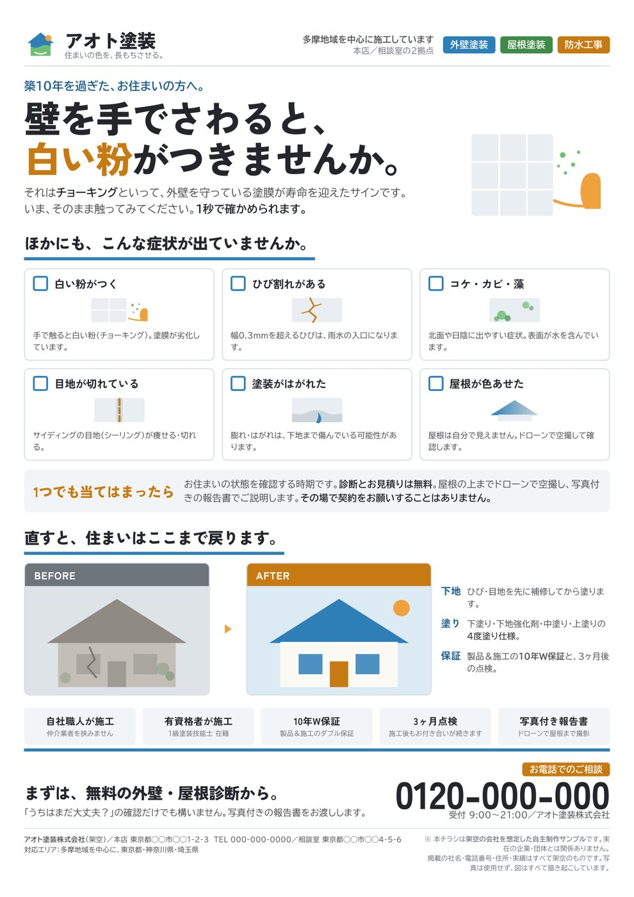

外壁塗装会社のポスティングチラシ（架空案件・自主制作）。構成・コピー・レイアウト・図版まで通しで制作しました。

ポスティングチラシで一番むずかしいのは「目に止まる」ことではなく、その次の「自分に関係があると感じてもらう」ことだと考えました。
そこで見出しを、説明ではなくその場でできる行動にしています。チョーキング（塗膜の劣化）は指でなぞるだけで誰でも判定できるので、 チラシを持ったまま壁に触れた瞬間に、他人事だった外壁塗装が自分の家の話に変わります。 続く症状チェックリストも、読者が自分で当てはめられる形にしました。
| サイズ・体裁 | A4（210×297mm）片面 / 300dpi / 塗り足し付きの入稿データも出力可 |
|---|---|
| 担当範囲 | 構成設計・キャッチコピー・本文ライティング・レイアウト・図版作成 |
| 使用写真 | なし。掲載している図版（家・症状アイコン・ロゴ）はすべて描き起こしです |
| 書体 | 見出し：Zen Kaku Gothic New Black／本文：BIZ UDPGothic（UD書体） いずれも SIL Open Font License 1.1 |
| 本文の級数 | 約8.4pt 以上。40〜70代の読者を想定し、可読性の下限を先に決めてから組んでいます |
| 制作方法 | HTML / CSS で mm 単位で組版し、ヘッドレスブラウザから 300dpi で出力。 紙面のはみ出しは目視ではなく実測スクリプトで検査（下マージン8mm以内を確認済み） |
| 制作時期 | 2026年9月 |